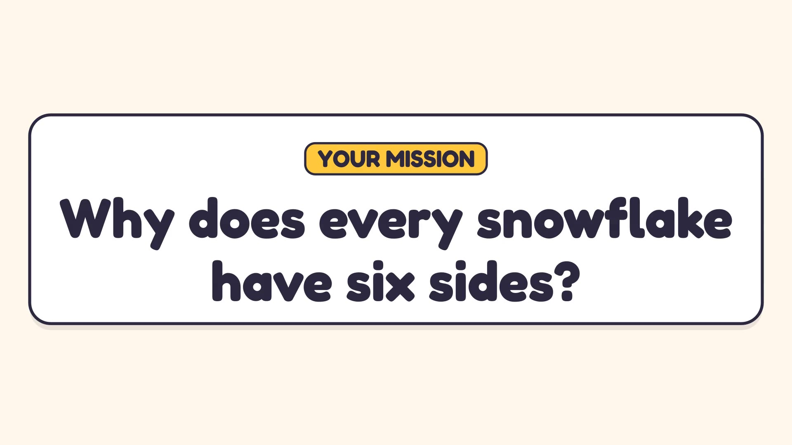
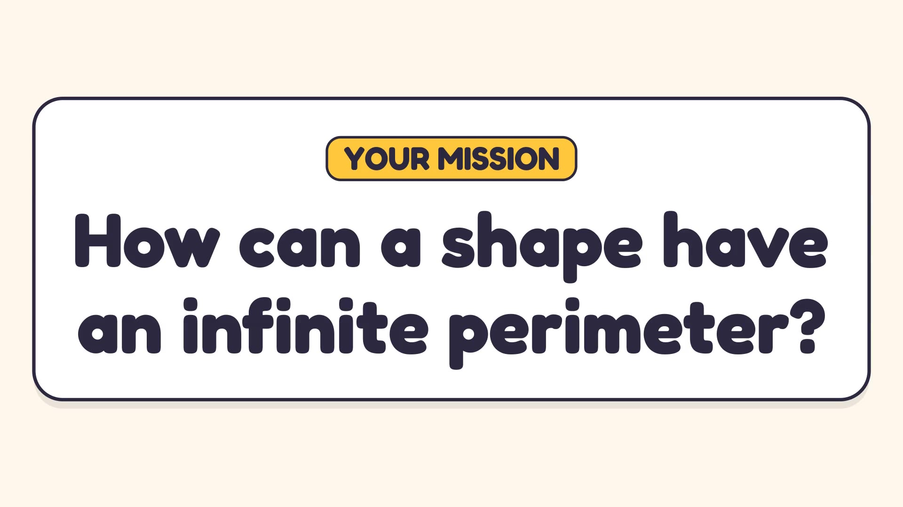
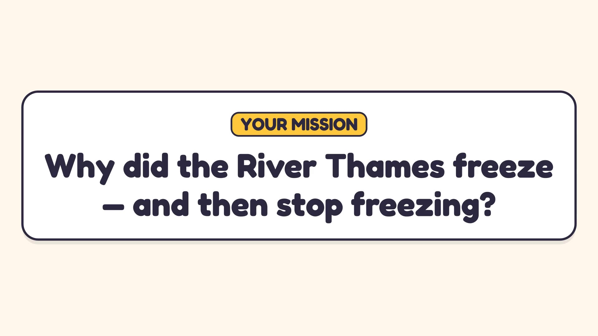
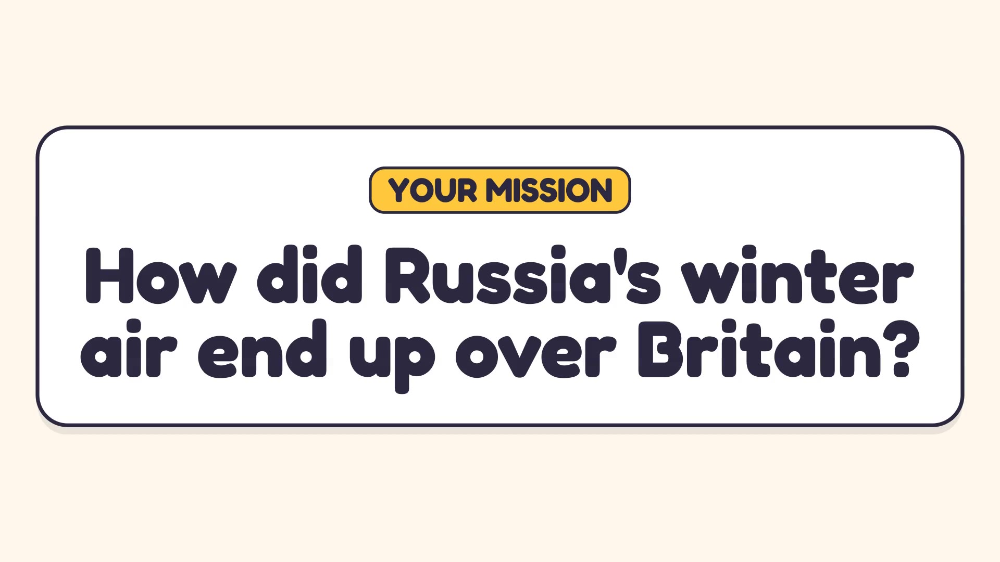
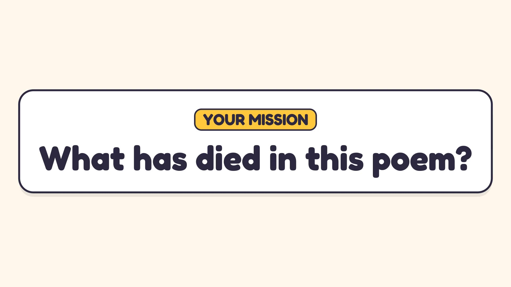
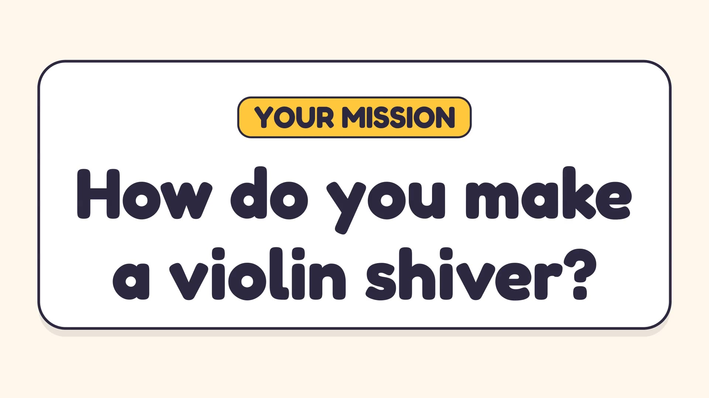

Six free mini-lessons, one per subject, each built around a question you can't quite answer yet. Guess first, then find out. Finish one and win 100 bonus coins for the Revision Arcade.

Science · GCSE Chemistry Why Every Snowflake Has Six Sides Why does every snowflake have six sides? Water molecules, the ice lattice, why ice floats, and whether two snowflakes are ever the same. Start the lesson →
Maths · GCSE The Snowflake with an Infinite Edge How can a shape have an infinite perimeter? Build the Koch snowflake: perimeter, area, scale factors, sequences and symmetry. Start the lesson →
History · KS3 The Little Ice Age Why did the River Thames freeze — and then stop freezing? Frost fairs, a quiet Sun, the year without a summer, and two historians who disagree. Start the lesson →
Geography · GCSE The Beast from the East How did Russia's winter air end up over Britain? The 2018 cold spell: a sudden stratospheric warming, its impacts, and whether the UK could have been readier. Start the lesson →
English · GCSE Literature A Thrush at the End of the Century What has died in this poem? Hardy's The Darkling Thrush read as an unseen poem, then compared with Coleridge's Frost at Midnight. Start the lesson →
Music · GCSE How Vivaldi Makes a Violin Shiver How do you make a violin shiver? Vivaldi's Winter: ostinato, trills, pizzicato rain, ritornello form and what makes it sound Baroque. Start the lesson →